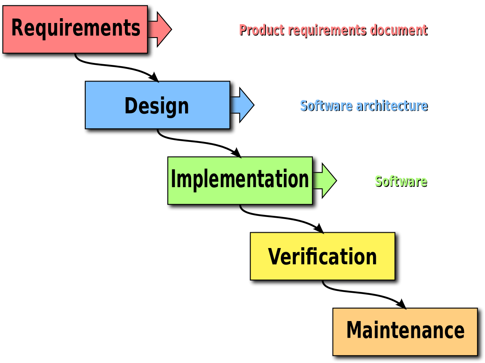

Object Oriented Programming p. 2
This lesson will teach you more in depth about a key concept of Object Oriented Programming: Polymorphism
It will also outline the software developing process using the Waterfall Model.
You will be given a code example for Polymorphism, and a project that uses OOP at a more complex stage:
Java Object Oriented Programming Demonstration #2
and is also a key concept in Object Oriented Programming.
The concept of Polymorphism is typically seen when a variable of Superclass type is used to
refer to a Subclass object. This is classified as an "is-a" relationship.

The two main types of casting that occur in Polymorphism are Downcasting and Upcasting
Downcasting involves assinging a <Superclass> type to a variable of type <Subclass>.
Downcasting needs to be preformed manually by the programmer as opposed to upcasting which occurs automatically.
This can only be done when the Superclass type has a value of type Subclass, For example:

Upcasting involves assinging a <Subclass> value to a variable of type <Superclass>.
This is done automatically, but can also be done as such:

Click here to read more about Polymorphism.
In the first stage, the purpose and requirement of the software are determined.
Next, the software is designed and planned out.
The program is then developed with code, and unfinished products are developed.
After this, the software is tested to ensure there are minimal to no errors, and everything functions as intended.
Finally, after the program is released, changes and updates continue to be made and released.
Click here to read more about the Waterfall model.
This lesson will teach you more in depth about a key concept of Object Oriented Programming: Polymorphism
It will also outline the software developing process using the Waterfall Model.
You will be given a code example for Polymorphism, and a project that uses OOP at a more complex stage:
Java Object Oriented Programming Demonstration #2
This is a more complex demonstration of Oject Oiented Pogramming in Java.
Each Student has their own assigned Locker, Books, and Jacket.
The program simulates a student enetering the classroom. It checks to see if the student has the correct books,
does not have his/her jacket, and that they have a locker. Based on the outcome, they may be sent to their locker or to the office.

and is also a key concept in Object Oriented Programming.
The concept of Polymorphism is typically seen when a variable of Superclass type is used to
refer to a Subclass object. This is classified as an "is-a" relationship.
The two main types of casting that occur in Polymorphism are Downcasting and Upcasting
Downcasting involves assinging a <Superclass> type to a variable of type <Subclass>.
Downcasting needs to be preformed manually by the programmer as opposed to upcasting which occurs automatically.
This can only be done when the Superclass type has a value of type Subclass, For example:
Upcasting involves assinging a <Subclass> value to a variable of type <Superclass>.
This is done automatically, but can also be done as such:
Click here to read more about Polymorphism.

In the first stage, the purpose and requirement of the software are determined.
Next, the software is designed and planned out.
The program is then developed with code, and unfinished products are developed.
After this, the software is tested to ensure there are minimal to no errors, and everything functions as intended.
Finally, after the program is released, changes and updates continue to be made and released.
Click here to read more about the Waterfall model.